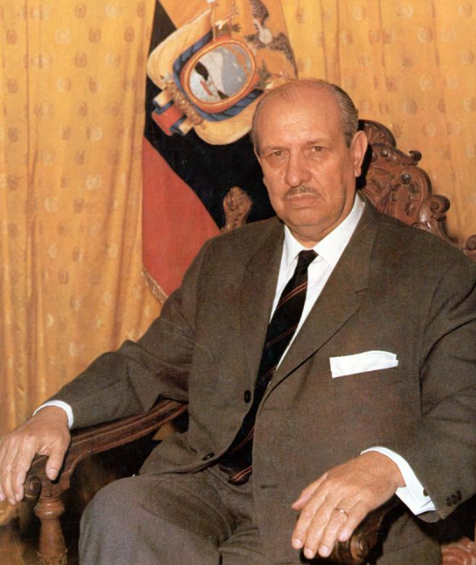

El Custodio de la
Certeza Jurídica
Evolución, reformas al 2025 y el futuro inalterable de la Ley Notarial.
Agenda de la Ponencia
Historia & Génesis
Del escribano colonial a la Ley Notarial de 1966. El momento fundacional que lo cambió todo.
Reformas Constitucionales
2008 y el COFJ. De testigo pasivo a operador activo de justicia preventiva.
Requisitos, Deberes & Atribuciones
El marco legal vigente: quién puede ser notario, qué debe hacer y hasta dónde llega su potestad.
Era Digital al 2025
Firma electrónica, protocolos digitales, protección de datos y el ecosistema notarial del mañana.
Antes de la Ley:
La Época de los Escribanos
- 28 agosto 1534: Gonzalo Díaz de Pineda extiende el acta de fundación de Quito — primera actuación notarial registrada en el territorio ecuatoriano.
- Leyes de Indias: Los escribanos eran nombrados en número determinado por cada circunscripción y ejercían con carácter vitalicio bajo título real y examen ante la Real Audiencia.
- El Amanuense: Fedatario limitado a la transcripción, sin investidura institucional unificada ni cuerpo legal propio.
- El Problema: Dispersión legal entre el Código Civil, las Leyes de Indias y decretos aislados — sin protocolo uniforme ni garantía de certeza jurídica.

Clemente Yerovi
Indaburu
Presidente Interino del Ecuador, marzo–noviembre 1966
- Fin de la Dispersión: Unifica bajo un solo cuerpo legal cuatro siglos de normativa fragmentada.
- El Notario como Institución: El Estado eleva la profesión de oficio secundario a pilar jurídico.
- Protocolo Unificado: Nace el sistema de matrices y el protocolo que blindó el comercio y el patrimonio por medio siglo.
Lo que lo Cambió Todo
Unificación Jurídica
Un solo cuerpo legal derogó siglos de normativa dispersa entre el Código Civil, las Leyes de Indias y decretos aislados.
Investidura Institucional
El Notario pasa a ser nombrado por el Estado. Nace la figura del Notario como funcionario público independiente.
Fe Pública Garantizada
La firma y el sello notarial pasan a tener fuerza ejecutiva. Los actos notariales son inimpugnables salvo juicio de nulidad.
Seis Décadas de Reformas
Decreto Supremo N.° 1404 — La Ley Notarial
Yerovi unifica la función notarial bajo un solo cuerpo legal. R.O. 158, 11 de noviembre de 1966.
D.S. 2386 — Ampliación del Art. 18
Se agregan atribuciones: certificación de documentos y levantamiento de protestos. R.O. 564, 12 de abril de 1978.
Ley 2006-62 — Competencias Extrajudiciales
Traslado al notariado de funciones judiciales voluntarias: divorcios, posesiones efectivas, uniones de hecho. R.O. 406, 28-XI-2006.
Constitución de Montecristi + COFJ
El notario como operador de justicia preventiva. Constitución: R.O. 449, 20-X-2008. COFJ: R.O. 544-S, 9-III-2009.
COGEP — Nuevas Atribuciones Notariales
El Código Orgánico General de Procesos amplía Art. 18 con 8 nuevas atribuciones. R.O. 506-S, 22-V-2015.
Era Digital: Telemática + LOPDP
Comparecencia telemática legalizada (R.O. 345-S, 8-XII-2020). Ley Orgánica de Protección de Datos Personales (R.O. 459, 26-V-2021).
De Testigo a Juez
de Paz Preventivo
El mayor salto competencial en la historia del notariado ecuatoriano
- Sistema saturado: Los juzgados civiles colapsan. El Estado confía en el notariado.
- Nuevas competencias: Divorcios, posesiones efectivas, disoluciones conyugales, tutelas.
- El Arquitecto de la Paz: El notario ya no espera el conflicto — lo previene.
«Que es necesario que el país cuente con una Ley que regule no sólo la función notarial y el instrumento público, sino también la organización de los Depositarios de la fe pública para lograr la jerarquización del notario ecuatoriano.»Clemente Yerovi Indaburu — Considerandos del Decreto Supremo N.° 1404, 1966
Requisitos para ser Notario
Código Orgánico de la Función Judicial y Constitución de la República
-
Título de Abogado o Doctor en Jurisprudencia
Título de tercer nivel en derecho, legalmente reconocido en el Ecuador.
-
Ciudadanía Ecuatoriana en ejercicio
Goce pleno de derechos políticos y civiles al momento del concurso.
-
Mínimo 3 años de ejercicio profesional
Práctica jurídica con notoria probidad, acreditada antes del concurso.
-
Buena reputación e idoneidad
Acreditada ante tribunal integrado por delegados del Consejo de la Judicatura, del Colegio de Notarios y del Colegio de Abogados.
-
Concurso de Méritos y Oposición
Proceso público convocado por el Consejo de la Judicatura, sujeto a impugnación y control social. Const. Art. 200.
Prohibiciones:
El Escudo de la Imparcialidad
Lo que el Notario nunca puede hacer, por ningún motivo — Art. 20, Ley Notarial
No al Libre Ejercicio
Prohibido ejercer libremente la abogacía o desempeñar cargo público o privado remunerado, excepto la docencia universitaria. (Art. 20, num. 5)
No al Interés Personal
Prohibido autorizar escrituras en que el notario, su cónyuge o parientes dentro del cuarto grado de consanguinidad o segundo de afinidad tengan interés directo. (Art. 20, num. 3)
No a Escrituras Simuladas
Prohibido otorgar, a sabiendas, escrituras simuladas o autorizar actos donde no se determine con precisión la cuantía del contrato. (Art. 20, nums. 4 y 7)
No a Vulnerar el Secreto
Prohibido permitir que, mientras viva el testador, alguien se informe de sus disposiciones testamentarias, salvo el propio testador. (Art. 20, num. 6)
Los Deberes del
Fedatario
- Asesorar con Imparcialidad: Advertir a las partes sobre las consecuencias de sus actos. La lealtad es solo con la Ley.
- Identificar a los Comparecientes: Verificar identidad, capacidad y libertad. Sin coacción, sin temor reverencial.
- Redacción Sin Ambigüedad: Una escritura impecable es un muro contra el litigio futuro.
- Guardar el Secreto Notarial: Los actos no inscritos en el registro son reservados hasta su divulgación legal.
- Conservar el Protocolo: El archivo notarial es patrimonio público. Responsabilidad permanente.
Atribuciones del Notario
Escrituras Públicas
Compraventas, hipotecas, donaciones, mandatos, fideicomisos y todo acto que requiere solemnidad legal.
Divorcios por Mutuo Consentimiento
Sin hijos menores ni bienes en disputa. El notario como alternativa ágil al proceso judicial.
Posesiones Efectivas
Trámite de herencia cuando no hay juicio. Agilidad y certeza para los herederos.
Declaraciones Juramentadas
Instrumento ejecutivo inmediato para constatar hechos y eximir responsabilidades legales.
Disolución Sociedad Conyugal
Liquidación patrimonial de forma voluntaria, sin intervención judicial.
Reconocimiento de Firmas y Documentos
Autenticación de firmas, copias certificadas, legalizaciones e instrumentos privados.
El Protocolo Notarial
El archivo que sostiene la certeza jurídica del Ecuador
- Libro Físico y Digital: Registro cronológico e inalterable de todos los actos autorizados.
- La Matriz Original: Permanece en la notaría. Las copias certificadas son las que circulan.
- Acceso Público Regulado: Cualquier persona puede solicitar copias. La publicidad notarial es principio de fe pública.
- Custodia Permanente: Al finalizar el cargo, el protocolo pasa al Archivo Nacional o a otra notaría designada.
«...leída que fue íntegramente la misma por los comparecientes, aquellos se ratifican en todas y cada una de sus partes; y, para constancia, firman conmigo, en unidad de acto.»
QUEDANDO INCORPORADA AL PROTOCOLO DE ESTA NOTARÍA — DE TODO LO CUAL DOY FE.
La Era Digital
Comparecencia Telemática: Ley vigente desde el 8 de diciembre de 2020
- Servicio telemático legal: La Ley Orgánica Reformatoria del COFJ (R.O. 345-S, 8-XII-2020) habilita actos notariales por videoconferencia a través de la plataforma del Consejo de la Judicatura.
- Firma electrónica: Los comparecientes remotos suscriben con firma electrónica reconocida; el protocolo digital archiva la videoconferencia íntegra. (Art. 18.1)
- Actos que siguen siendo presenciales: Testamento cerrado, autorización de salida de menores, apertura de testamento cerrado y autenticación de firmas manuscritas. (Art. 18.2)
- Solemnidad intacta: El notario verifica capacidad, conocimiento y voluntad libre a través de la plataforma oficial. La tecnología es el vehículo; el criterio notarial, irremplazable.
Firma Electrónica y
Comparecencia Telemática
Actos sin Presencia Física
- Comparecencia por videoconferencia a través de la plataforma del Consejo de la Judicatura, con grabación íntegra en el protocolo digital.
- Firma electrónica de todos los otorgantes y del notario — misma validez que la firma manuscrita.
- Minutas firmadas electrónicamente por abogado patrocinador, con número de matrícula.
- Copias electrónicas certificadas con firma electrónica notarial. (Art. 18, num. 5b)
Actos que No Admiten Telemática
- Testamento cerrado — requiere presencia física del testador.
- Autorización de salida del país de menores de edad.
- Apertura y publicación de testamento cerrado.
- Autenticación de firmas manuscritas ante el notario.
Protección de
Datos en Actos Notariales
Ley Orgánica de Protección de Datos Personales — publicada en R.O. Suplemento 459 el 26 de mayo de 2021
- El notario es responsable del tratamiento de datos personales que constan en sus protocolos.
- Obligación de consentimiento expreso del compareciente para datos sensibles.
- El principio de publicidad notarial coexiste con el derecho a la privacidad.
Datos de Categoría Especial
Etnia, salud, biometría, orientación sexual, pasado judicial. El notario los recibe bajo consentimiento expreso y principio de necesidad.
Transferencia de Datos
Las copias certificadas implican transferencia de datos a terceros. El notario debe documentar la finalidad del solicitante.
Archivo Digital y Seguridad
Los protocolos digitales exigen cifrado, control de acceso y auditoría. El Notario responde por brechas de seguridad en su archivo.
El Ecosistema Notarial
del Mañana
Interoperabilidad con el Estado
Tendencia hacia la integración progresiva de sistemas notariales con bases de datos estatales (Registro Civil, SRI, Superintendencias), en proceso de desarrollo regulatorio.
Protocolo Íntegramente Digital
El protocolo digital ya existe en la norma (Art. 18.1). La tendencia apunta hacia el archivo digital completo, con garantías de seguridad e inalterabilidad equivalentes al papel.
El Notario como Eje del Ecosistema
En cualquier escenario tecnológico, el criterio humano del fedatario sigue siendo el núcleo irrenunciable: identidad, capacidad y voluntad libre no se pueden delegar a un algoritmo.
El Legado Inalterable
- Las herramientas evolucionan. Del manuscrito colonial al protocolo digital, de la pluma al algoritmo.
- Pero ningún sistema reemplaza al ser humano íntegro que se para frente a las partes, lee su voluntad y la convierte en certeza que dura para siempre.
- La firma del Notario no es un trámite. Es una promesa al Estado, a la sociedad y a la historia.